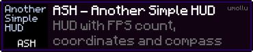
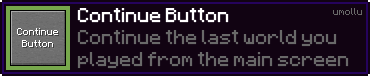
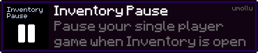

umollu
About
Learning how to make Minecraft mods since 2019 (late to the party)
Mods
ASH - Another Simple HUD

ASH - Another Simple HUD with FPS count and coordinates.
- 1.1.2 - Now with client side commands, working with dedicated servers, thanks to geniiiii_! 26/04/2019
- 1.1.1 - Added more commands: /togglefps /tooglecoords /toogledirection /alignash /resetash; 25/04/2019
- 1.1.0 - Added commands; 10/03/2019
- 1.0.0 - First version; 03/03/2019
Download Mod: CurseForge Link
Source code: GitHub Link
Continue Button

Continue the last world you played from the main screen.
- 1.0.1 - Implemented continue last multiplayer world played; 22/10/2020
- 1.0.0 - First version; 11/10/2020
Download Mod: CurseForge Link
Source code: GitHub Link
Inventory Pause

Pause your single player game when Inventory is open.
- 1.0.0 - First version; 01/05/2019
Download Mod: CurseForge Link
Source code: GitHub Link
Contacts
GitHub: github.com/umollu
Twitter: @umollu